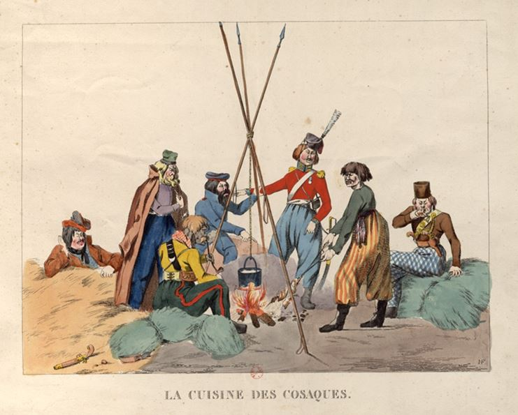
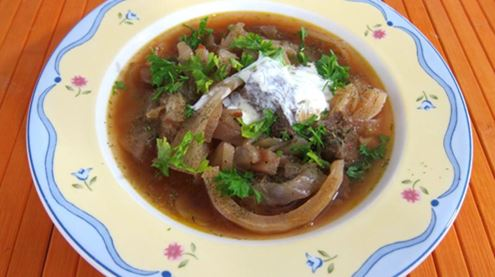
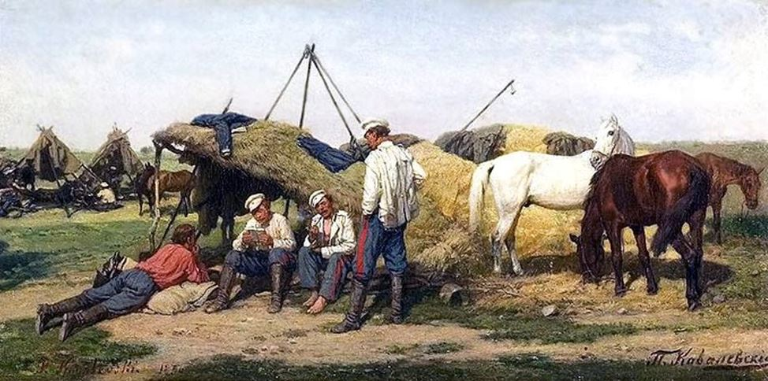
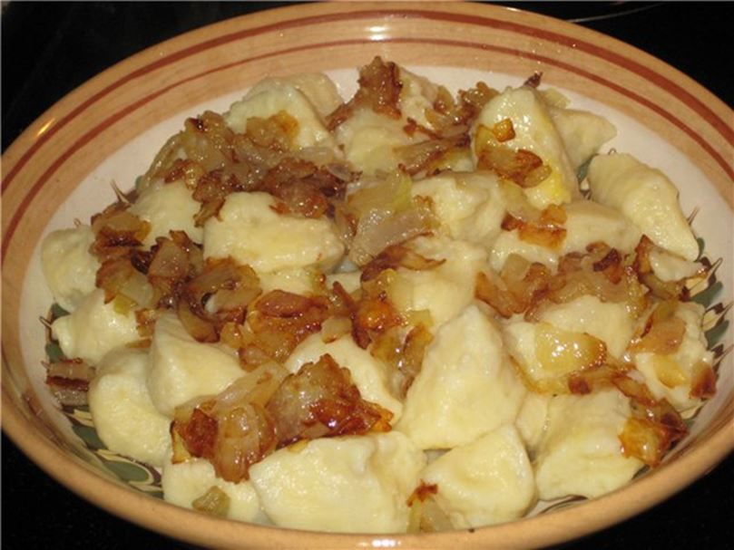
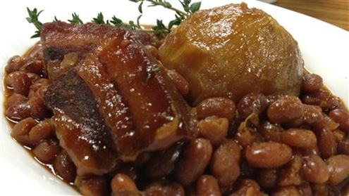

Le lard, ce produit ancien et étonnant, de nos jours est méprisé par les consommateurs et par les chefs ; il est chassé de la cuisine diététique et même les militants de l’alimentation saine ont oublié l’enfance du lard !
En traversant en bus les contrées vertes de l’Extremadura Espagnole et en contemplant là-bas las aldeas couvertes de yeuses et de cochons de belle race ibérique, je ne pouvais me retenir de comparer ce pur royaume du sanglier avec mon pays natal, où le cochon et surtout son lard sont les piliers de la cuisine nationale. Les produits espagnols à base de porc sont tellement proches des produits ukrainiens que l’idée de l’union gastronomique et donc spirituelle de nos terres s’impose de soi-même.
Depuis des temps immémoriaux les ukrainiens étaient appelés par les peuples-voisins « les mangeurs du lard » - saloyidy, où salo signifie le lard. Cette caractéristique est même passée en proverbe. A l’époque on disait : si j’étais un grand seigneur je ne mangerais que du lard comme entrée et comme plat principal !
Un grand poète, l’homme savant et le mécène de l’Ukraine à la fin du siècle des Lumières, Ivan Kotlarevsky, dans sa splendide version de « L’Eneide », déguisée en cosaque et pleine d’humour et de sagesse populaire, a fait l’éloge de la cuisine nationale en célébrant les plats des cosaques et les festins interminables de nos zaporogues. Le lard et le porc par préférence accompagnent toutes les ribotes d’Enée et de ses compagnons :
Et comme son frère Aceste montrait
A Enée toute sa sympathie.
Il l’invita dans sa chaumière
Et lui offrit de l’eau-de-vie.
On a sorti beaucoup de lard,
Des saucissons si bons, si grands
Et un tamis bien plein de pain.
Ces cosaques Troyens en se préparant pour les campagnes, remplissaient leurs sacs de lard et de millet !
Dans le dernier chant le roi Latinus pense à amadouer Enée avec ces cadeaux et parmi les choses précieuses il y a :
La confiture, l’esturgeon et le lard !
Les repas quotidiens de nos ancêtres étaient accompagnés par du lard sous toutes ses formes. Le lard frais salé se mangeait avec du pain, de l’ail et l’oignon entre les repas, le lard écrasé servant comme assaisonnement pour les borchtchs et les bouillons, le lard sauté avec des oignons accompagnant tous les raviolis ukrainiens - vareniki, galouchki, kliotski etc ; les omelettes, les viandes rôties et les saucisses rustiques se préparaient toujours avec du lard.
On a oublié ce bon produit, le considérant trop calorique et peu amène pour la santé. Mais nos ancêtres étaient plus sages que nous - sans savoir tout ce qu’on découvre maintenant dans notre lard précieux. La digestibilité du lard est plus élevée que celle du lait ou de l’huile de foie de morue ; son activité biologique est supérieure à toute autre graisse animale, et d’un certain point de vue il est meilleur que le beurre ; il ne contient presque pas de cholestérol mais il contient tous les amino-acides, les acides gras essentiels et beaucoup de vitamines. Ces qualités du lard préviennent l’athérosclérose et d’autres maladies plus graves.
En ce moment quand l’hiver arrive et amène les refroidissements et les rhumes, il est très bon de manger tous les jours en peu de lard pour se protéger des virus, car notre cher lard contient un acide miraculeux – l’acide arachidonique. Si vous chauffez vos plats à la poêle il vaut mieux utiliser le lard parce qu’il ne dégage pas d’éléments toxiques, comme les huiles végétales.
Jadis le lard était irremplaçable pour les voyageurs, puisque, accompagné par de petites quantités de pain, il nourrissait très bien les gens pendant leurs longs voyages.
J’évoquerai aussi un livre renommé dans mon pays, un livre de médecine populaire basée sur les plantes officinales, qui fut composé au début du XX siècle par un prêtre ukrainien Michel Nossal, et terminé par son fils à l’époque soviétique. L’auteur utilise très souvent le lard comme base pour préparer les liniments et les onguents différents, en plus le lard frais est le premier produit indiqué dans la diète pour les enfants faibles et malade de rachitisme !
C’est un produit si simple à préparer et à conserver : il suffit de le saler et de le mettre au frais dans la vaisselle céramique ou en bois, ou dans un sac de toile, ainsi il sera bon deux ans durant pour vous guérir et pour accompagner vos festins zaporogues !
Partager cette page